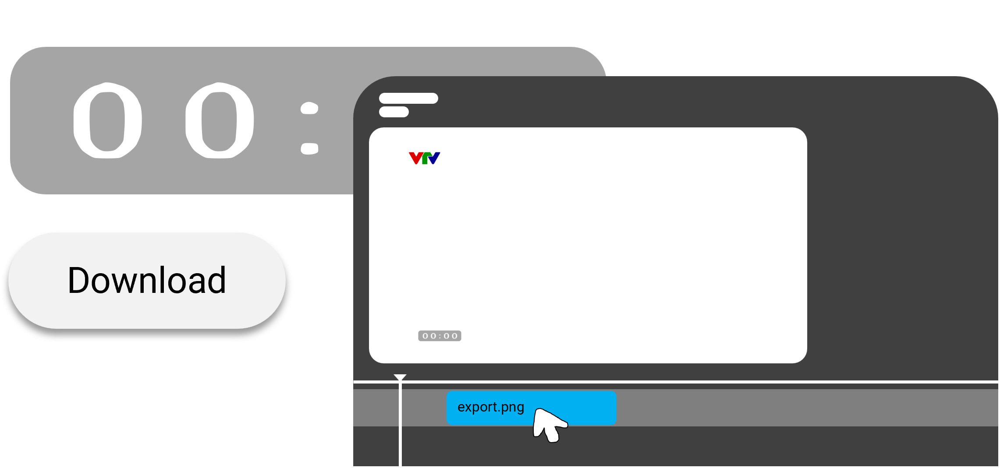

Tạo đồng hồ
v0.1.3
BETA
Báo cáo lỗi
home
Home
schedule
Nhật ký sửa đổi
info
Giới thiệu
experiment
Test lab
Giới thiệu
Tạo đồng hồ VTV - một công cụ hỗ trợ designers và editors thiết kế đồng hồ cho riêng kênh VTV phục chế của họ.
Hiểu về đồng hồ và tên CT VTV
Đồng hồ và tên CT (tên chương trình VTV) là chỉ báo trực quan, tức là thông qua những thứ đó để người xem có thể biết được hiện tại là mấy giờ và đang trình chiếu chương trình gì
Chỉnh sửa tên CT và đồng hồ cho riêng mình để làm gì?
Những ai phục chế các kênh không do Đài Truyền hình Việt Nam thực hiện sẽ cần ghép vào video của mình những thứ này để xem như là kênh VTV thực thụ
Ghi nhớ rằng đây chỉ là dành cho mục đích phát triển video, còn nếu dùng mà không có mục đích thì xin vui lòng bỏ qua ;)
Cách sử dụng
Nếu bạn chỉ tạo video trong khoảng thời gian 3-5 phút, bạn có thể làm đồng hồ theo từng phút. Sau đó ghép vào video của bạn từng phút theo thời lượng.

Đối với đồng hồ LIVE (sử dụng đồng hồ tự động)
1. Tải file PowerPoint về, bấm nút dưới đây để tải
Bấm vào đây để tải
2. Bạn cần cài đặt bộ font
UTM Helve
để không bị lỗi tên chương trình, và cài đặt thêm font sau: (đây là font đồng hồ số, nó chỉ hiển thị số bình thường, còn chữ sẽ ko bình thường được)
Bấm vào đây để tải
3. Mở file PowerPoint, bạn có thể tự ý thay đổi logo theo Slide 2 trước khi đến bước 4.
4. Vào phần View, chọn Macro. Bạn sẽ thấy có 3 macro, bấm StartLiveTime và bấm Chạy. Bạn nên bấm cùng lúc đồng hồ hệ thống của bạn chuyển sang phút tiếp theo.
5. Bấm vào chế độ Trình chiếu, vậy là xong. Nếu bạn muốn thêm video, kéo thả video của bạn vào trong trình chiếu rồi để ra đằng sau cùng.